전자계산기기능사 (2005-04-03 기출문제)
1과목: 전기전자공학
1. 그림과 같은 연산증폭기의 명칭은? (단, Vi는 입력 신호전압이다.)
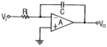
- 미분기
- 적분기
- 가산기
- 부호변환기
(정답률: 57%)

2. 직렬로 연결된 저항의 전압강하의 합에 대한 설명으로 옳은 것은?
- 공급전압과 같다.
- 가장 작은 전압강하의 값보다 작다.
- 모든 전압강하의 평균값과 같다.
- 공급전압보다 크다.
(정답률: 38%)
3. 자체 인덕턴스가 20mH인 코일에 60Hz의 전압을 가하면 코일의 유도리액턴스는 약 몇 Ω인가?
- 2.44
- 3.76
- 5.48
- 7.54
(정답률: 28%)
4. AM 변조 시에 반송파의 주파수를 700KHz, 변조파의 주파수를 5KHz라고 할 때 주파수 대역폭은 몇 KHz가 되는가?
- 5
- 10
- 14
- 140
(정답률: 43%)
5. 그림과 같이 회로에 입력을 주었을 때 출력 파형은 어떻게 되는가?
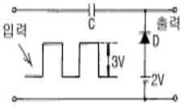
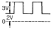
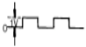
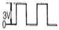
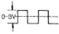
(정답률: 52%)
6. 영상전달상수 θ=α＋jβ로 표시된다. 여기에서 α는 어떤 상수인가?
- 위상상수
- 감쇠상수
- 전달상수
- 검파상수
(정답률: 43%)
7. 전파정류회로의 특징에 대한 설명으로 틀린 것은?
- 전원전압의 이용률이 좋다.
- 리플주파수는 전원주파수의 2배이다.
- 리플률이 반파보다 작다.
- 직류 출력전압은 반파정류의 2배이다.
(정답률: 37%)
8. 진폭변조 송신기의 출력이 100% 변조 시에 평균 150W이다. 30% 변조시의 출력은 몇 W인가?
- 84.5
- 94.5
- 104.5
- 114.5
(정답률: 35%)
9. 회로에서 V0를 구하면 몇 V인가? (단, I2>>IB, VBᴇ=0.6[V], Ic≈Iᴇ 임)(문제 복원오류로 정답은 2번입니다. 여기서는 2번을 누르면 정답 처리 됩니다. 문제의 네모칸 안의 정확안 내용을 아시는 분들께서는 오류 신고를 통하여 내용작성 부탁 드립니다.)
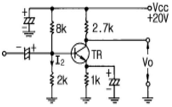
- 9.82
- 10.82
- 11.82
- 12.82
(정답률: 61%)
10. 회로에 그림과 같은 입력파형을 인가하면 출력파형은?
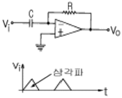
- 삼각파
- 정현파
- 임펄스파
- 구형파
(정답률: 53%)
2과목: 전자계산기구조
11. 게이트 당 소모 전력(mW)이 가장 적은 IC는?
- TTL
- RTL
- DTL
- CMOS
(정답률: 87%)
12. 중앙처리장치와 주기억장치의 사이에 존재하며, 수행속도를 빠르게 하는 것은?
- 캐시 기억장치
- 보조 기억장치
- ROM
- RAM
(정답률: 78%)
13. 복수 개의 입력 단자와 복수 개의 출력 단자를 가진 다출력 조합 회로로서 입력 단자에 어떤 조합의 부호가 가해졌을 때 그 조합에 대응하여 출력단자에 변형된 조합의 신호가 나타나도록 하는 회로는?
- decoder
- complement
- full adder
- parity generator
(정답률: 61%)
14. PROGRAM 수행 중 서브루틴(Sub-Routine)으로 돌입할 때 프로그램의 리턴번지(Return Address)수를 LIFO(Last-In First-Out)기술로 메모리의 일부에 저장한다. 이 메모리 부분을 무엇이라 하는가?
- 주기억장치
- 보조기억장치
- 스택
- 어셈블러
(정답률: 72%)
15. 자료를 일정 시간(기간)동안 모아 두었다가 한 번에 처리하는 시스템은?
- 일괄(Batch) 처리 시스템
- 지연(Delayed) 처리 시스템
- 실시간(Real Time) 처리 시스템
- 시분할(Time Sharing Time) 처리 시스템
(정답률: 84%)
16. 정보통신망 구성 시 필요 없는 장치는?
- 통신 제어 장치
- 모뎀
- 단말기
- 통신 연산 장치
(정답률: 44%)
17. 출력이
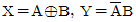
이다. 어떠한 회로인가?- 반가산기
- 전가산기
- 반감산기
- 전감산기
(정답률: 28%)
18. 산술 및 논리연산의 결과를 일시적으로 기억하는 레지스터는?
- Storage register
- Address register
- Index register
- Accumulator
(정답률: 82%)
19. 중앙처리장치의 입·출력 자료처리 방법이 아닌 것은?
- 프로그램 입·출력 방식
- 인터럽트 입·출력 방식
- 직접 메모리 전송 방식
- 연관 기억장치 방식
(정답률: 38%)
20. 패리티의 기능을 확장하여 오류의 검출뿐만 아니라 오류를 정정할 수 있는 코드는?
- 그레이코드
- 아스키코드
- 해밍코드
- 유니코드
(정답률: 84%)
21. 중앙연산처리 장치에서 마이크로 동작(Micro Operation) 이 순서적으로 일어나게 하기 위하여 필요한 것은?
- 제어신호
- 스위치
- 레지스터
- 메모리
(정답률: 55%)
22. 보조 기억장치로 간편하고 대용량이며, 데이터나 프로그램을 장기간 보관할 때 사용하며, 순차접근 방식인 기억장치는?
- 자기테이프
- 자기디스크
- CD-ROM
- 자기코어
(정답률: 72%)
23. 주기억 장치로부터 명령어를 읽어서 중앙처리장치로 가져오는 사이클은?
- fetch cycle
- indirect cycle
- execute cycle
- interrupt cycle
(정답률: 59%)
24. 두 개의 통신 회선을 사용하여 접속된 두 장치 사이에서 동시에 양 방향으로 데이터를 전송하는 통신 방식은?
- 단방향 통신 방식
- 반이중 통신 방식
- 전이중 통신 방식
- 배이중 통신 방식
(정답률: 77%)
25. 다음 그림 연산자의 수행 결과는?
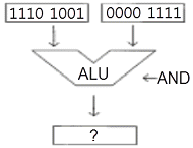
- 1110 1001
- 1110 1111
- 0000 1001
- 1111 0110
(정답률: 77%)
26. 중앙처리 장치의 기능과 거리가 먼 것은?
- 메모리 장치
- 제어 장치
- 주변 장치
- 연산 장치
(정답률: 69%)
27. 10진수 85를 BCD 코드로 변환하면?
- 0101 0101
- 1010 1010
- 1000 0101
- 0111 1010
(정답률: 83%)
28. 2진수 00000010을 2의 보수로 나타낸 것은?
- 11111110
- 11111101
- 11111100
- 11111111
(정답률: 67%)
29. DRAM의 설명으로 옳은 것은?
- 플립플롭을 집적한 것이다.
- 주로 캐시 메모리로 사용된다.
- SRAM에 비해 속도가 빠르다.
- 주기적으로 재충전이 필요하다.
(정답률: 59%)
30. 인터럽트 순위에서 가장 높은 우선순위에 해당되는 것은?
- 정전
- 기계적 고장
- 프로그램 오류
- 입력과 출력
(정답률: 59%)
3과목: 프로그래밍일반
31. 고급 언어의 특징으로 옳지 않은 것은?
- 프로그램 작성이 쉽고, 수정이 용이하다.
- 일상생활에서 사용하는 자연어와 유사한 형태의 언어이다.
- 어셈블리어와 같은 언어로 속도가 빠르고 메모리를 효율적으로 사용한다.
- 하드웨어에 관한 전문적인 지식이 없어도 프로그램 작성이 용이하다.
(정답률: 50%)
32. 구조적 프로그래밍의 기본 구조에 해당하지 않는 것은?
- 반복구조
- 조건구조
- 블록구조
- 순차구조
(정답률: 51%)
33. C 언어에서 실수형 변수를 정의할 때 사용하는 것은?
- int
- long
- float
- char
(정답률: 47%)
34. 컴파일러에 대한 설명으로 옳은 것은?
- 기계어로 작성된 프로그램을 한 줄씩 번역
- 고급언어로 작성된 프로그램을 기계어로 번역
- 어셈블리어로 작성된 프로그램을 기계어로 번역
- 반복되는 명령어 집합체를 별도로 묶어 한 줄씩 번역
(정답률: 51%)
35. 실행중인 프로세스의 여러 가지 구문적 오류(Syntax-Error)에 의해 발생되는 인터럽트(Interrupt)를 무엇이라 하는가?
- 입ㆍ출력 인터럽트
- 외부 인터럽트
- 프로그램 체크 인터럽트
- 머신 체크 인터럽트
(정답률: 53%)
36. 번역 프로그램에 의해 번역된 프로그램을 의미하는 것은?
- 원시 프로그램(Source Program)
- 목적 프로그램(Object Program)
- 로드 모듈(Load Module)
- 편집기(Editor)
(정답률: 65%)
37. 운영체제를 수행 기능에 따라 제어 프로그램과 처리 프로그램으로 분류할 경우 아래 설명에 해당하는 프로그램의 종류는?
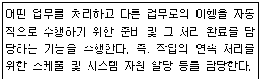
- 감시 프로그램
- 서비스 프로그램
- 작업 제어 프로그램
- 문제 프로그램
(정답률: 60%)
38. 목적 프로그램을 읽어 들여 주기억장치에 적재시킨 후에 실행시키는 서비스 프로그램은?
- 원시 프로그램(Source Program)
- 목적 프로그램(Object Program)
- 로더(Loader)
- 링커(Linker Editor)
(정답률: 48%)
39. 운영체제의 성능 평가 요인으로 옳지 않은 것은?
- 비용
- 처리능력
- 사용가능도
- 응답시간
(정답률: 86%)
40. 기계어에 가장 가까운 언어는?
- FORTRAN
- C
- COBOL
- ASSEMBLY
(정답률: 58%)
4과목: 디지털공학
41. 6진 카운터를 만들기 위한 최소 플립플롭의 수는?
- 2개
- 3개
- 4개
- 5개
(정답률: 75%)
42. 레지스터의 일종으로 산술연산 또는 논리연산의 결과를 일시적으로 기억하는 장치는?
- 누산기
- 가산기
- 감산기
- 보수기
(정답률: 81%)
43. 불 대수의 기본으로 옳지 않은 것은?
- A + A' = 1
- A ㆍ A' = 1
- A + A = A
- A ㆍ A = A
(정답률: 69%)
44. 다음 논리 게이트의 회로 방식 중에서 동작 속도가 빠른 순서대로 나열된 것은? (단, 왼쪽이 가장 빠름)
- ECL-DTL-TTL-MOS
- TTL-ECL-MOS-DTL
- ECL-TTL-DTL-MOS
- TTL-MOS-ECL-DTL
(정답률: 70%)
45. 10 진수를 BCD 코드로 변환하는 것을 무엇이라 하는가?
- 디코더
- 인코더
- A/D 변환기
- 감산기
(정답률: 53%)
46. 10진수의 13을 2진수로 나타내면?
- 1100
- 1011
- 1110
- 1101
(정답률: 71%)
47. 주종형 JK-플립플롭에서 클럭 펄스가 가해질 때마다 출력 상태가 반전되는 것은?
- J=0, K=0
- J=0, K=1
- J=1, K=0
- J=1, K=1
(정답률: 73%)
48. 아래 그림과 같은 기능을 가진 논리 회로는?
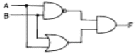
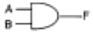
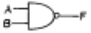
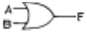
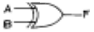
(정답률: 59%)
49. A=1, B=0, C=1 일 때 논리식의 값이 0이 되는 것은?
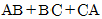
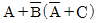
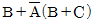
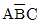
(정답률: 60%)
50. 회로의 안정 상태에 따른 멀티바이브레이터의 종류가 아닌 것은?
- 비안정 멀티바이브레이터
- 단안정 멀티바이브레이터
- 쌍안정 멀티바이브레이터
- 주파수 안정 멀티바이브레이터
(정답률: 76%)
51. 다음 회로 명칭으로 적합한 것은?
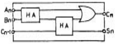
- 누산기
- 레지스터
- 전가산기
- 전감산기
(정답률: 63%)
52. 다음 중 드모르간의 법칙은?
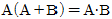
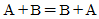
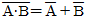
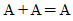
(정답률: 79%)

53. 펄스가 입력되면 현재와 반대의 상태로 바뀌게 하는 토글(toggle) 상태를 만드는 회로는?
- D형 플립플롭
- T형 플립플롭
- 주종 플립플롭
- 레지스터형 플립플롭
(정답률: 84%)
54. 아래 논리회로 기호에서 입력 A=1, B=0일 때 출력 Y의 값은?
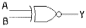
- Y=0
- Y=1
- Y=이전상태
- Y=반대상태
(정답률: 56%)
55. 반가산기에서 입력 A=1이고, B=0이면 출력 합(S)과 올림수(C)는?
- S=0, C=0
- S=1, C=0
- S=1, C=1
- S=0, C=1
(정답률: 83%)
56. 부동소수점 방식과 거리가 먼 것은?
- 지수부
- 소수부
- 가수부
- 보수부
(정답률: 40%)
57. 순서논리회로를 설계할 때 사용되는 상태표(state table) 의 구성 요소가 아닌 것은?
- 이전 상태
- 현재 상태
- 다음 상태
- 출력
(정답률: 65%)
58. 데이터 전송에 있어 시간 지연을 만드는 플립플롭은?
- RS
- T
- D
- JK
(정답률: 73%)
59. 2진화 10진수 (0111 1000 0110 0101 0100)BCD를 10진수로 나타내면?
- 78645
- 87654
- 87645
- 78654
(정답률: 73%)
60. 디코더(decoder)는 무슨 회로의 집합인가?
- OR
- NOT
- AND
- X-OR
(정답률: 42%)